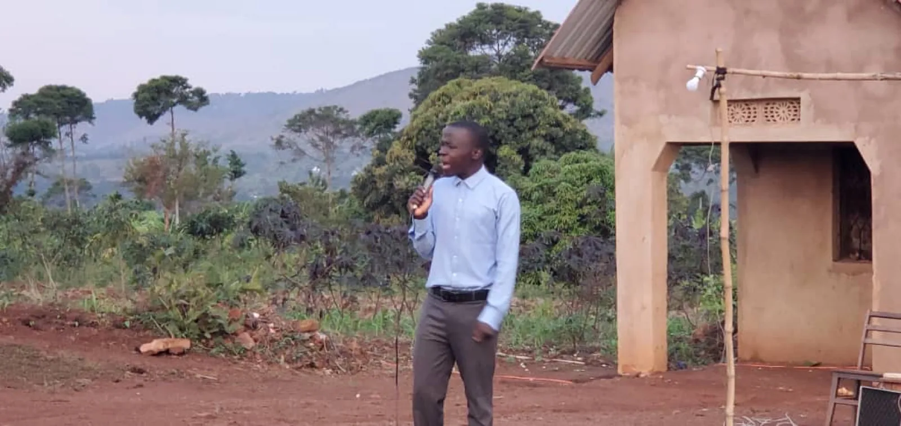

Beyond the pulpit
The Gospel does not stop at the church door. We cross borders to preach and serve, build tools for the Word, restore dignity, care for the body, and stand in prayer for peace.

Carrying the Word across borders
Our trips to Africa are part of the mission of Ukweli Ministries. We travel to preach, teach, worship with the churches, baptize new believers, visit families, and serve communities in practical ways.
A photo may show worship, baptism, or fellowship and still belong to the larger mission trip. These moments are gathered here without losing their more specific activity labels in the main gallery.
See every mission momentRaising builders
We reach young believers through technology, teaching them engineering and how it can serve the Gospel today. The same hands that learn to code can carry the Word further than any single pulpit.
Our own apps came out of this conviction. BibleArcade and YouLive were built inside this ministry, and the next generation of builders is learning to do the same.
Peace in every land at war
We advocate for peace in every country at war. We believe war is spiritual before it is political, and what is spiritual bends to prayer.
So we pray, we intercede, and we raise our voice, believing God can silence guns that diplomacy cannot. From the DR Congo to every troubled land, we stand and cry out for peace.
Made in the image of God
We are bringing back modesty — and with it, true self-love. We were made in the image of God (Genesis 1:27), and we teach men and women to honor that image in how they dress, how they carry themselves, and how they see themselves.
Worth is not found in the world's standards but in the One who made us (1 Timothy 2:9–10; 1 Peter 3:3–4). And we sew what we preach: our modesty ministry makes garments within the church, led from Tanzania by Amosi Kaswahili.
Strength to serve the Lord
We strongly believe God commands us to live healthy. Our bodies are the temple of the Holy Spirit (1 Corinthians 6:19–20), so what we eat and how we live is itself an act of worship.
When we are healthy, we can pray, we can worship, we can serve, and we can do the work of the Lord with full strength (3 John 1:2; Daniel 1:8–16; 1 Corinthians 10:31).
Build with us. Pray with us.
Young builder, intercessor, or supporter: there is a place for you in this work. Write to us and tell us how you want to serve.